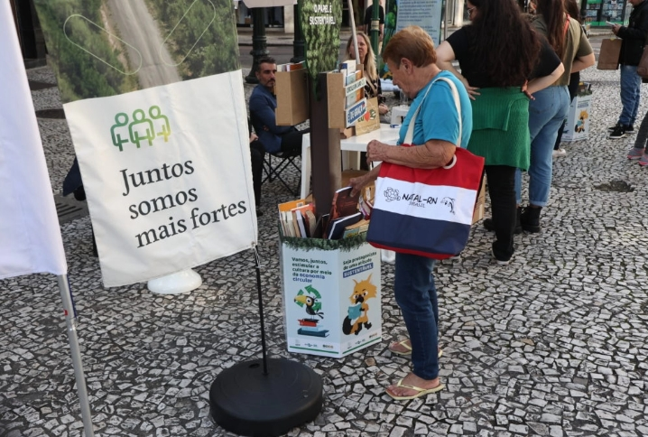
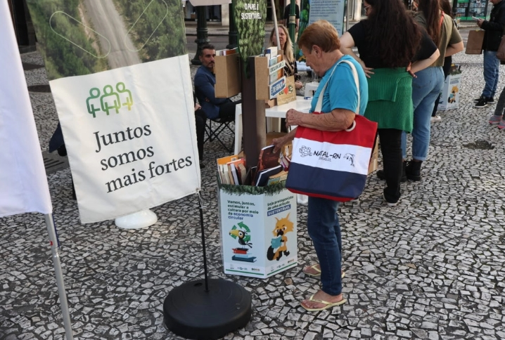

📚 Roda de Leitura Comunitária
Encontros semanais com contação de histórias em escolas e praças públicas.
- Impacto: 500 crianças atendidas mensalmente.
- Duração: Contínuo.
Conheça nossas iniciativas que conectam pessoas e histórias.
Encontros semanais com contação de histórias em escolas e praças públicas.
Veículo adaptado que leva livros e oficinas a comunidades rurais.
Cada contribuição ajuda a espalhar mais leitura, conhecimento e esperança pelo Brasil.
Você pode contribuir de diferentes maneiras para fortalecer nossos projetos de incentivo à leitura:

 
